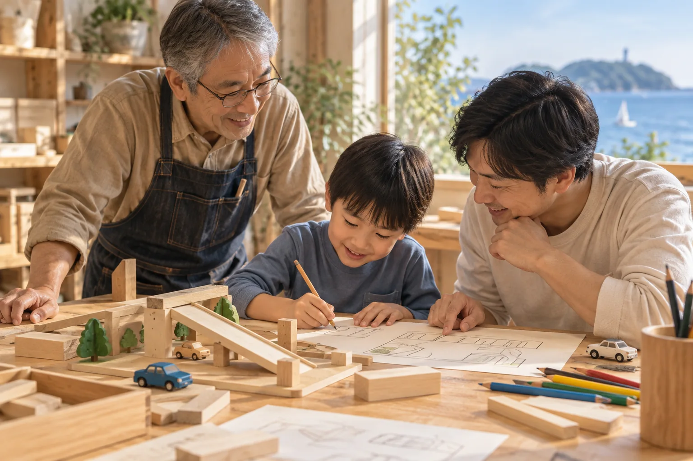
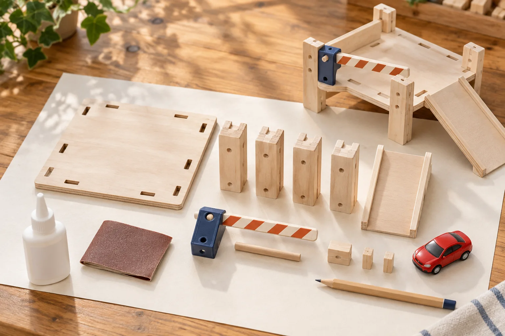
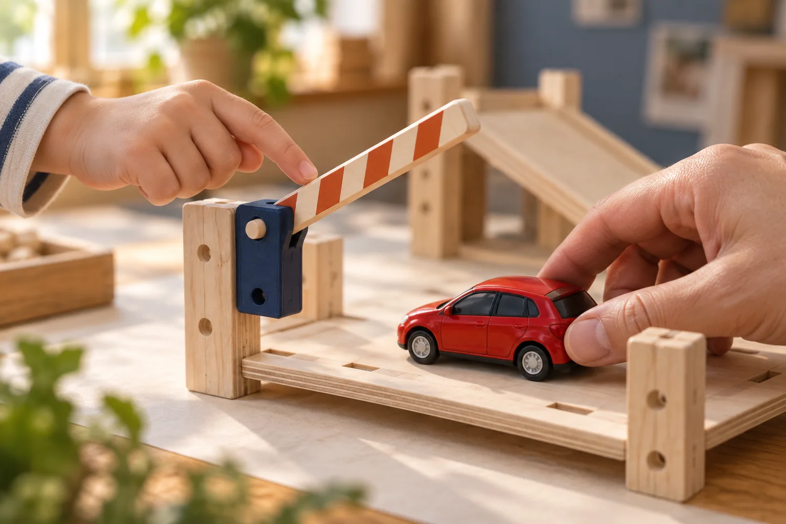

最初の看板企画
ミニカーの駐車場を
つくろう！
坂道を走らせる。ゲートを開ける。
じぶんの手で、じぶんのまちをつくる。
エンジニアとして積み重ねてきた経験を、
子どもにも伝わる「しくみの面白さ」に。

工作室で過ごす時間
手を動かすと、
わかること。
- 1
見て、あそぶ
見本を動かしてみる。
「ここ、どうなってる？」から始まる。 - 2
かんがえる
どんなまちにしよう。
紙に描いて、材料を並べてみる。 - 3
つくる
用意した部品を組み合わせる。
色や飾りは、自分らしく。 - 4
動かしてみる
ゲートを上げる。車を通す。
自分の手で、しくみを確かめる。 - 5
変えて、あそぶ
坂を変えたら、どう走る？
「もう一回」が、次の工夫になる。

最初は、手で動かす
ちいさなゲートに、
発見がある。
最初の案は、手動ゲート。
切り出した木や、3Dプリンタで事前に用意する部品を組み合わせます。
センサーで開く自動ゲートは、共用の見本や、その先の発展編に。最初から全部を詰め込まず、ひとつの「わかった」を大切にします。
材料・部品・工程は、これから試作して確かめる案です。
まずは、小さく一回
身近な親子と、
試してみる。
材料を用意して、一緒につくる。
楽しかったこと、難しかったことを聞く。
二郎さん自身も「またやりたい？」を確かめる。
はじめの工作メモ
- 用意するもの
- 材料、道具、見本、つくる手順。
- 大切にすること
- 大人が道具を見守り、無理のない工程で。
- 試してから決めること
- 時間、人数、参加費、続けるペース。
現在は企画の提案段階です。開催日や募集はまだ決まっていません。